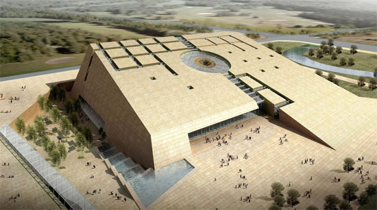

成都金沙遗址博物馆
全国重点文物保护单位，国家AAAA级旅游景区
成都金沙遗址博物馆，位于四川省成都市青羊区金沙遗址路2号，成都金沙遗址博物馆占地面积456亩，建筑面积38000平方米。

成都金沙遗址博物馆的两大主体建筑为遗迹馆和陈列馆，外形都采用了斜坡的方式，喻示着金沙遗址的冉冉升起。遗迹馆为近圆形，陈列馆为方形，一圆一方象征着中国古人天圆地方的宇宙观。两座建筑分布在摸底河的南北两岸，与园林区融为一体。成都金沙遗址博物馆也成为了成都市的地标性建筑。
成都金沙遗址博物馆的两大主体建筑为遗迹馆和陈列馆，外形都采用了斜坡的方式，喻示着金沙遗址的冉冉升起。成都金沙遗址博物馆有金器、铜器、玉器、石器、漆木器、陶器、象牙等馆藏文物共2235件（套）。其中，一级文物366件（套）、二级文物374件（套）、三级文物1429件（套）。
成都金沙遗址博物馆的园林区以“自然之美，草野之趣”为设计理念，绿化覆盖率高达80%，是博物馆的有机组成部分。在园林区中，树木和植被根据不同的特点划分为不同区域。主要游览道路两旁栽种了四川盆地非常古老的树种银杏、水杉、针楠等；樱花林、桃花林、梨花林、芙蓉林、腊梅林等点缀在园区各处；竹林、灌木簇拥在博物馆建筑周围。